2017-08-11
EXPERIMENTS
LSTM MODELS
1. LSTM Model with hiddenDim=256, depth=2
Speaker-dependent training accuracy - 91.61%, validation accuracy - 84.82%
Speaker-independent validation accuracy - 61.73%
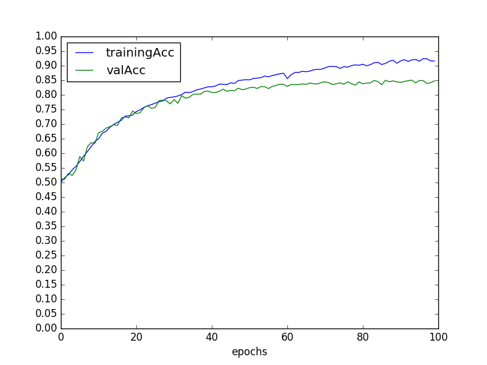
- Figure 1: Training accuracy, Validation accuracy vs Epoch, for model with LSTM of hiddenDim=256, depth=2
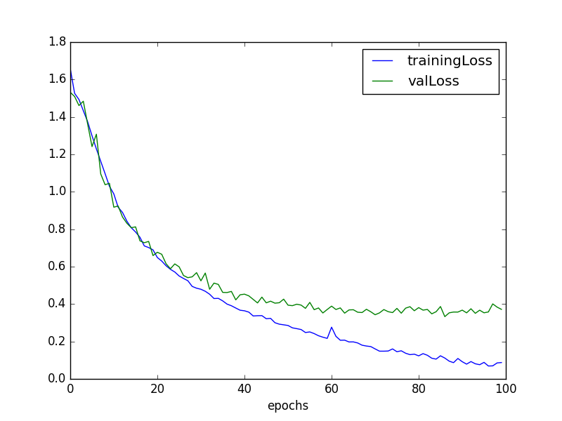
- Figure 2: Training loss, Validation loss vs Epoch, for model with LSTM of hiddenDim=256, depth=2
2. LSTM Model with hiddenDim=256, depth=3
Speaker-dependent training accuracy - 90.03%, validation accuracy - 84.85%
Speaker-independent validation accuracy - 61.17%
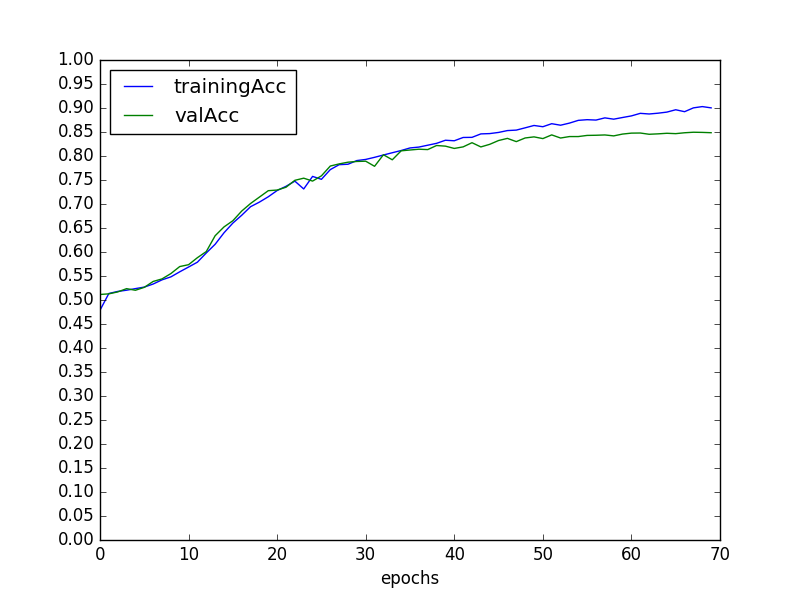
- Figure 3: Training accuracy, Validation accuracy vs Epoch, for model with LSTM of hiddenDim=256, depth=3
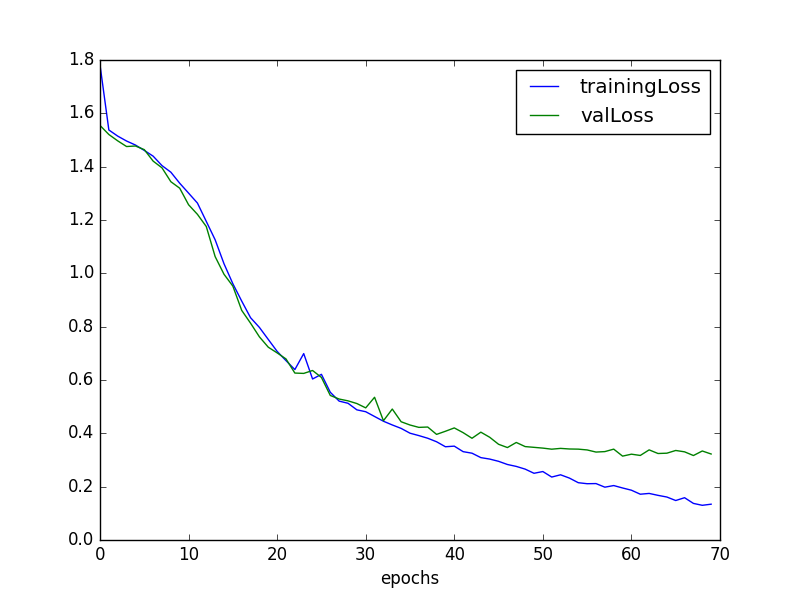
- Figure 4: Training loss, Validation loss vs Epoch, for model with LSTM of hiddenDim=256, depth=3
3. LSTM Model with hiddenDim=256, depth=2, encoded into 64 dimensions*
Speaker-dependent training accuracy - 84.17%, validation accuracy - 83.04%
Speaker-independent validation accuracy - 62.02%
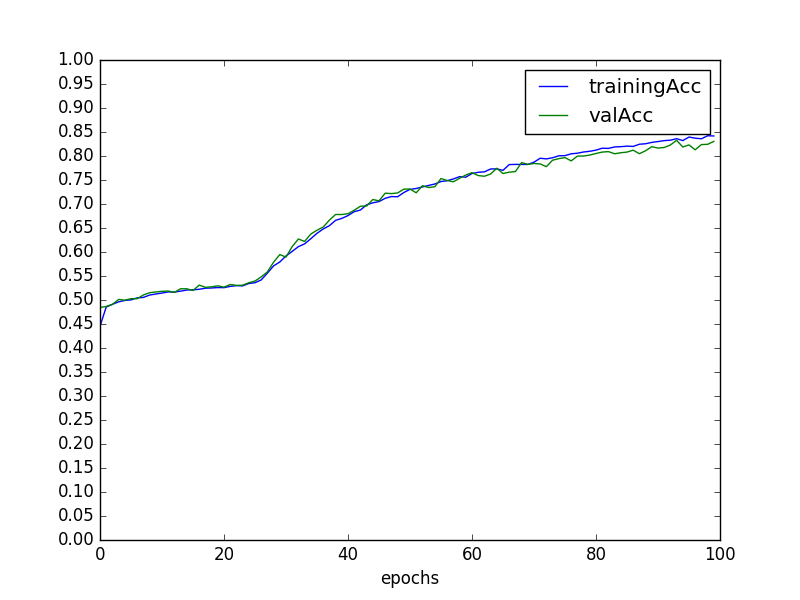
- Figure 5: Training accuracy, Validation accuracy vs Epoch, for model with LSTM of hiddenDim=256, depth=2, and an encoding Dense layer of dim=64
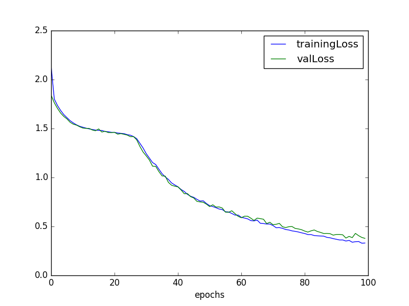
- Figure 6: Training loss, Validation loss vs Epoch, for model with LSTM of hiddenDim=256, depth=2, and an encoding Dense layer of dim=64
**Only ran for 100 epochs, can proceed further!!
4. Seq2Seq LSTM Model with hiddenDim=256, depth=2 (Similar to what we were using before)
Speaker-dependent training accuracy - 90.10%, validation accuracy - 78.90%
Speaker-independent validation accuracy - 58.19%

- Figure 7: Training accuracy, Validation accuracy vs Epoch, for model with Seq2Seq model of hiddenDim=256, depth=2
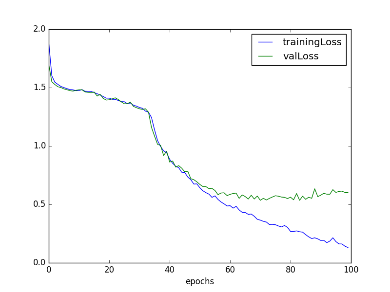
- Figure 8: Training loss, Validation loss vs Epoch, for model with Seq2Seq model of hiddenDim=256, depth=2
CRITIC
1. Critic using predicted word from LSTMLipReader
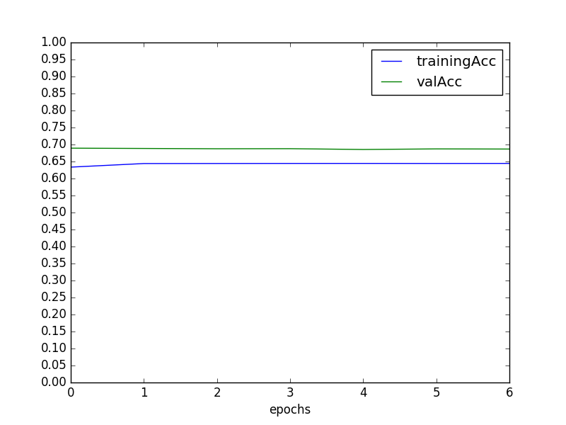
- Figure 9: Training accuracy, Validation accuracy vs Epoch, for Critic using predicted word from LSTMLipReader
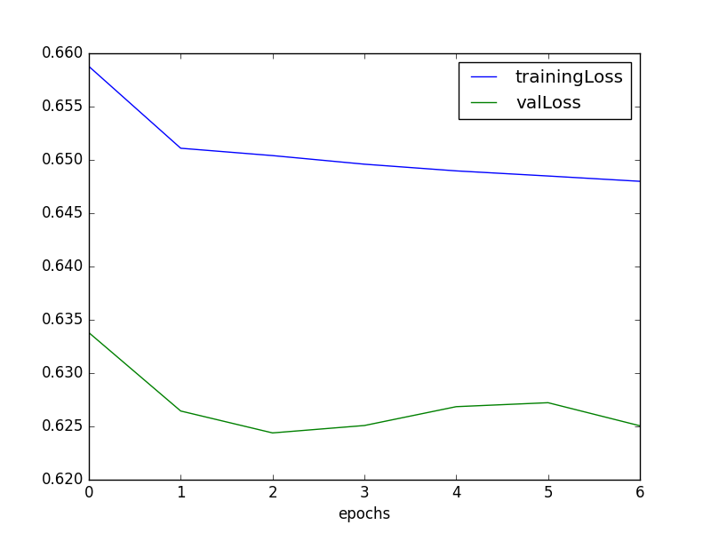
- Figure 10: Training loss, Validation loss vs Epoch, for Critic using predicted word from LSTMLipReader
2. Critic using 64-dimensional encoded value from LSTMLipReader
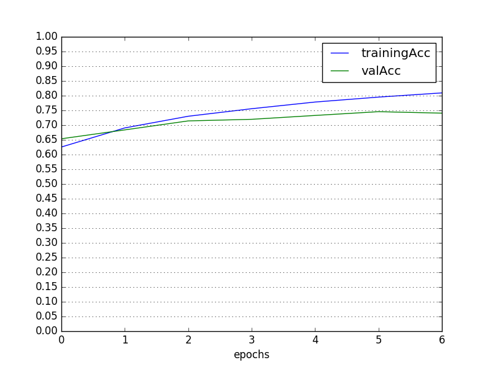
- Figure 11: Training accuracy, Validation accuracy vs Epoch, for Critic using 64-dimensional encoded value from LSTMLipReader
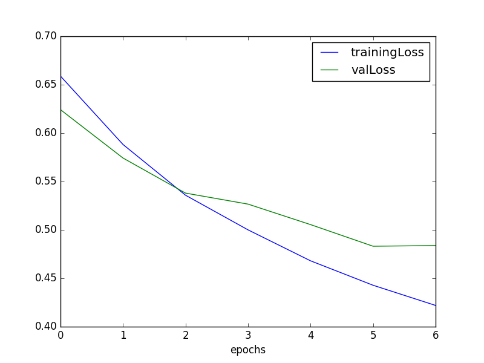
- Figure 12: Training loss, Validation loss vs Epoch, for Critic using 64-dimensional encoded value from LSTMLipReader
FINE-TUNING - GRIDcorpus to HINDI
1. Fine-tuning LSTM Model with hiddenDim=256, depth=3 to Hindi-LSTMLipReader
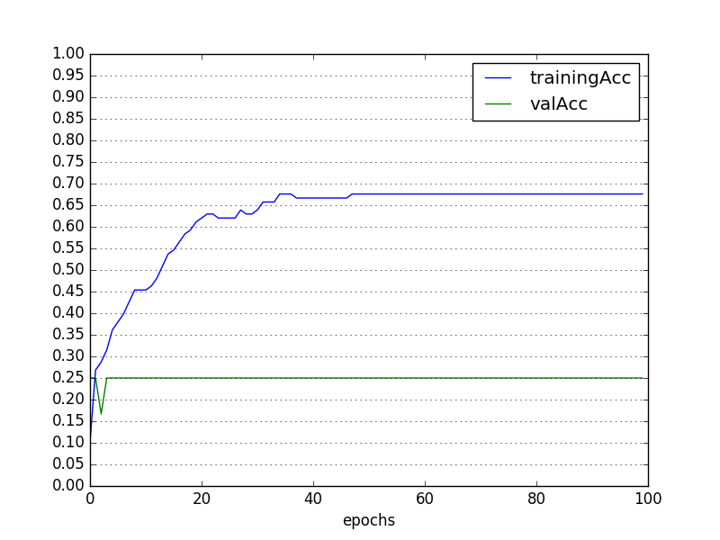
- Figure 13: Training accuracy, Validation accuracy vs Epoch, for LSTMLipReader with hiddenDim=256, depth=3 fine-tuned to Hindi-LSTMLipReader
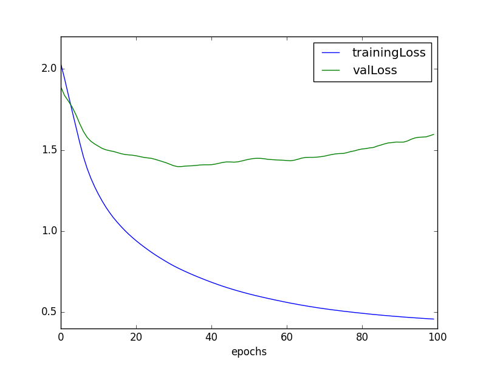
- Figure 14: Training loss, Validation loss vs Epoch, for LSTMLipReader with hiddenDim=256, depth=3 fine-tuned to Hindi-LSTMLipReader
2. Fine-tuning LSTM Model with hiddenDim=256, depth=2, encoded into 64 dimensions to Hindi-LSTMLipReader
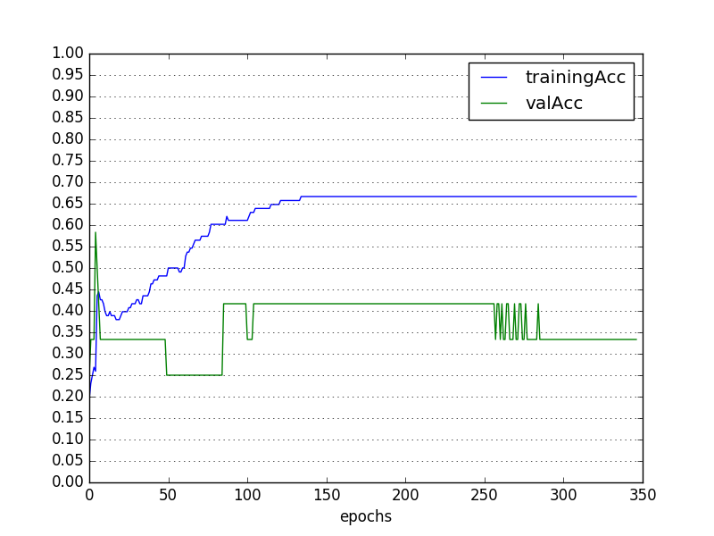
- Figure 15: Training accuracy, Validation accuracy vs Epoch, for LSTMLipReader with hiddenDim=256, depth=3 fine-tuned to Hindi-LSTMLipReader
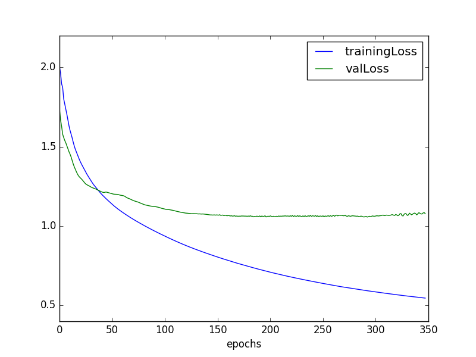
- Figure 16: Training loss, Validation loss vs Epoch, for LSTMLipReader with hiddenDim=256, depth=3 fine-tuned to Hindi-LSTMLipReader